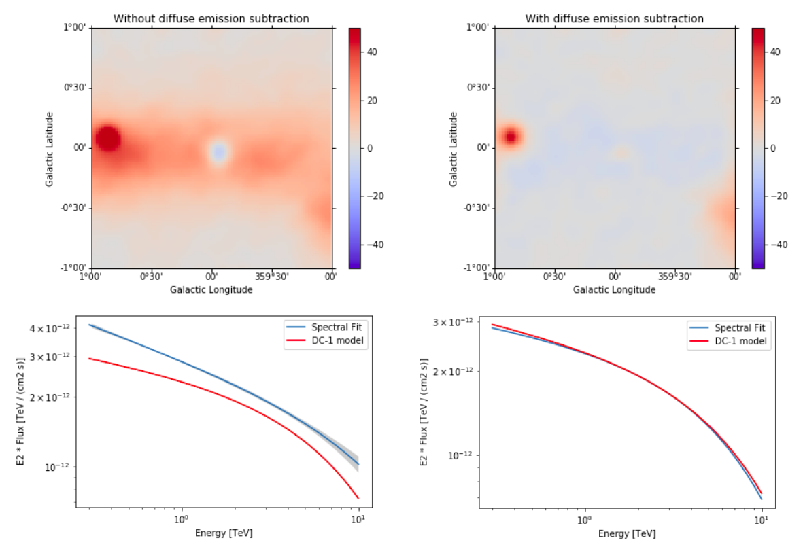

This is a fixed-text formatted version of a Jupyter notebook
- Try online

- You can contribute with your own notebooks in this GitHub repository.
- Source files: analysis_3d.ipynb | analysis_3d.py
3D analysis¶
This tutorial shows how to run a 3D map-based analysis using three example observations of the Galactic center region with CTA.
Setup¶
[1]:
%matplotlib inline
import matplotlib.pyplot as plt
[2]:
import os
import numpy as np
import astropy.units as u
from astropy.coordinates import SkyCoord
from gammapy.extern.pathlib import Path
from gammapy.data import DataStore
from gammapy.irf import EnergyDispersion, make_mean_psf, make_mean_edisp
from gammapy.maps import WcsGeom, MapAxis, Map, WcsNDMap
from gammapy.cube import MapMaker, MapEvaluator, PSFKernel, MapFit
from gammapy.cube.models import SkyModel, SkyDiffuseCube, BackgroundModel
from gammapy.spectrum.models import PowerLaw, ExponentialCutoffPowerLaw
from gammapy.image.models import SkyGaussian, SkyPointSource
from regions import CircleSkyRegion
[3]:
!gammapy info --no-system
Gammapy package:
path : /Users/jer/git/gammapy/gammapy/gammapy
version : 0.10
githash : c6bfb5371a5a1682cea9aaf56ebedb3c42010a43
Other packages:
numpy : 1.16.0
scipy : 1.2.0
matplotlib : 3.0.2
cython : 0.29.3
astropy : 3.1.1
astropy_healpix : 0.4
reproject : 0.4
sherpa : 4.10.2
pytest : 4.1.1
sphinx : 1.8.3
healpy : 1.12.8
regions : 0.3
iminuit : 1.3.3
naima : 0.8.3
uncertainties : 3.0.3
Gammapy environment variables:
GAMMA_CAT : /Users/jer/git/gammapy/gamma-cat
GAMMAPY_DATA : /Users/jer/DATA/GAMMAPY
GAMMAPY_EXTRA : not set
GAMMAPY_FERMI_LAT_DATA : /Users/jer/git/gammapy/gammapy-fermi-lat-data
Prepare modeling input data¶
Prepare input maps¶
We first use the DataStore object to access the CTA observations and retrieve a list of observations by passing the observations IDs to the .get_observations() method:
[4]:
# Define which data to use and print some information
data_store = DataStore.from_dir("$GAMMAPY_DATA/cta-1dc/index/gps/")
data_store.info()
print(
"Total observation time (hours): ",
data_store.obs_table["ONTIME"].sum() / 3600,
)
print("Observation table: ", data_store.obs_table.colnames)
print("HDU table: ", data_store.hdu_table.colnames)
Data store:
HDU index table:
BASE_DIR: /Users/jer/DATA/GAMMAPY/cta-1dc/index/gps
Rows: 24
OBS_ID: 110380 -- 111630
HDU_TYPE: ['aeff', 'bkg', 'edisp', 'events', 'gti', 'psf']
HDU_CLASS: ['aeff_2d', 'bkg_3d', 'edisp_2d', 'events', 'gti', 'psf_3gauss']
Observation table:
Observatory name: 'N/A'
Number of observations: 4
Total observation time (hours): 2.0
Observation table: ['OBS_ID', 'RA_PNT', 'DEC_PNT', 'GLON_PNT', 'GLAT_PNT', 'ZEN_PNT', 'ALT_PNT', 'AZ_PNT', 'ONTIME', 'LIVETIME', 'DEADC', 'TSTART', 'TSTOP', 'DATE-OBS', 'TIME-OBS', 'DATE-END', 'TIME-END', 'N_TELS', 'OBJECT', 'CALDB', 'IRF', 'EVENTS_FILENAME', 'EVENT_COUNT']
HDU table: ['OBS_ID', 'HDU_TYPE', 'HDU_CLASS', 'FILE_DIR', 'FILE_NAME', 'HDU_NAME']
[5]:
# Select some observations from these dataset by hand
obs_ids = [110380, 111140, 111159]
observations = data_store.get_observations(obs_ids)
Now we define a reference geometry for our analysis, We choose a WCS based gemoetry with a binsize of 0.02 deg and also define an energy axis:
[6]:
energy_axis = MapAxis.from_edges(
np.logspace(-1.0, 1.0, 10), unit="TeV", name="energy", interp="log"
)
geom = WcsGeom.create(
skydir=(0, 0),
binsz=0.02,
width=(10, 8),
coordsys="GAL",
proj="CAR",
axes=[energy_axis],
)
The MapMaker object is initialized with this reference geometry and a field of view cut of 4 deg:
[7]:
%%time
maker = MapMaker(geom, offset_max=4.0 * u.deg)
maps = maker.run(observations)
CPU times: user 10.5 s, sys: 1.98 s, total: 12.5 s
Wall time: 12.6 s
The maps are prepared by calling the .run() method and passing the observations. The .run() method returns a Python dict containing a counts, background and exposure map:
[8]:
print(maps)
{'counts': WcsNDMap
geom : WcsGeom
axes : lon, lat, energy
shape : (500, 400, 9)
ndim : 3
unit : ''
dtype : float32
, 'exposure': WcsNDMap
geom : WcsGeom
axes : lon, lat, energy
shape : (500, 400, 9)
ndim : 3
unit : 'm2 s'
dtype : float32
, 'background': WcsNDMap
geom : WcsGeom
axes : lon, lat, energy
shape : (500, 400, 9)
ndim : 3
unit : ''
dtype : float32
}
This is what the summed counts image looks like:
[9]:
counts = maps["counts"].sum_over_axes()
counts.smooth(width=0.1 * u.deg).plot(stretch="sqrt", add_cbar=True, vmax=6);

This is the background image:
[10]:
background = maps["background"].sum_over_axes()
background.smooth(width=0.1 * u.deg).plot(
stretch="sqrt", add_cbar=True, vmax=6
);
And this one the exposure image:
[11]:
exposure = maps["exposure"].sum_over_axes()
exposure.smooth(width=0.1 * u.deg).plot(stretch="sqrt", add_cbar=True);
We can also compute an excess image just with a few lines of code:
[12]:
excess = counts - background
excess.smooth(5).plot(stretch="sqrt", add_cbar=True);
For a more realistic excess plot we can also take into account the diffuse galactic emission. For this tutorial we will load a Fermi diffuse model map that represents a small cutout for the Galactic center region:
[13]:
diffuse_gal = Map.read("$GAMMAPY_DATA/fermi-3fhl-gc/gll_iem_v06_gc.fits.gz")
[14]:
print("Diffuse image: ", diffuse_gal.geom)
print("counts: ", maps["counts"].geom)
Diffuse image: WcsGeom
axes : lon, lat, energy
shape : (120, 64, 30)
ndim : 3
coordsys : GAL
projection : CAR
center : 0.0 deg, -0.1 deg
width : 15.0 x 8.0 deg
counts: WcsGeom
axes : lon, lat, energy
shape : (500, 400, 9)
ndim : 3
coordsys : GAL
projection : CAR
center : 0.0 deg, 0.0 deg
width : 10.0 x 8.0 deg
We see that the geometry of the images is completely different, so we need to apply our geometric configuration to the diffuse emission file:
[15]:
coord = maps["counts"].geom.get_coord()
data = diffuse_gal.interp_by_coord(
{
"skycoord": coord.skycoord,
"energy": coord["energy"]
* maps["counts"].geom.get_axis_by_name("energy").unit,
},
interp=3,
)
diffuse_galactic = WcsNDMap(maps["counts"].geom, data)
print("Before: \n", diffuse_gal.geom)
print("Now (same as maps): \n", diffuse_galactic.geom)
Before:
WcsGeom
axes : lon, lat, energy
shape : (120, 64, 30)
ndim : 3
coordsys : GAL
projection : CAR
center : 0.0 deg, -0.1 deg
width : 15.0 x 8.0 deg
Now (same as maps):
WcsGeom
axes : lon, lat, energy
shape : (500, 400, 9)
ndim : 3
coordsys : GAL
projection : CAR
center : 0.0 deg, 0.0 deg
width : 10.0 x 8.0 deg
[16]:
# diffuse_galactic.slice_by_idx({"energy": 0}).plot(add_cbar=True); # this can be used to check image at different energy bins
diffuse = diffuse_galactic.sum_over_axes()
diffuse.smooth(5).plot(stretch="sqrt", add_cbar=True)
print(diffuse)
WcsNDMap
geom : WcsGeom
axes : lon, lat
shape : (500, 400)
ndim : 2
unit : ''
dtype : float32
We now multiply the exposure for this diffuse emission to subtract the result from the counts along with the background.
[17]:
combination = diffuse * exposure
combination.unit = ""
combination.smooth(5).plot(stretch="sqrt", add_cbar=True);
We can plot then the excess image subtracting now the effect of the diffuse galactic emission.
[18]:
excess2 = counts - background - combination
fig, axs = plt.subplots(1, 2, figsize=(15, 5))
axs[0].set_title("With diffuse emission subtraction")
axs[1].set_title("Without diffuse emission subtraction")
excess2.smooth(5).plot(
cmap="coolwarm", vmin=-1, vmax=1, add_cbar=True, ax=axs[0]
)
excess.smooth(5).plot(
cmap="coolwarm", vmin=-1, vmax=1, add_cbar=True, ax=axs[1]
);
Prepare IRFs¶
To estimate the mean PSF across all observations at a given source position src_pos, we use make_mean_psf():
[19]:
# mean PSF
src_pos = SkyCoord(0, 0, unit="deg", frame="galactic")
table_psf = make_mean_psf(observations, src_pos)
# PSF kernel used for the model convolution
psf_kernel = PSFKernel.from_table_psf(table_psf, geom, max_radius="0.3 deg")
To estimate the mean energy dispersion across all observations at a given source position src_pos, we use make_mean_edisp():
[20]:
# define energy grid
energy = energy_axis.edges * energy_axis.unit
# mean edisp
edisp = make_mean_edisp(
observations, position=src_pos, e_true=energy, e_reco=energy
)
Save maps and IRFs to disk¶
It is common to run the preparation step independent of the likelihood fit, because often the preparation of maps, PSF and energy dispersion is slow if you have a lot of data. We first create a folder:
[21]:
path = Path("analysis_3d")
path.mkdir(exist_ok=True)
And then write the maps and IRFs to disk by calling the dedicated .write() methods:
[22]:
# write maps
maps["counts"].write(str(path / "counts.fits"), overwrite=True)
maps["background"].write(str(path / "background.fits"), overwrite=True)
maps["exposure"].write(str(path / "exposure.fits"), overwrite=True)
# write IRFs
psf_kernel.write(str(path / "psf.fits"), overwrite=True)
edisp.write(str(path / "edisp.fits"), overwrite=True)
Likelihood fit¶
Reading maps and IRFs¶
As first step we read in the maps and IRFs that we have saved to disk again:
[23]:
# read maps
maps = {
"counts": Map.read(str(path / "counts.fits")),
"background": Map.read(str(path / "background.fits")),
"exposure": Map.read(str(path / "exposure.fits")),
}
# read IRFs
psf_kernel = PSFKernel.read(str(path / "psf.fits"))
edisp = EnergyDispersion.read(str(path / "edisp.fits"))
Let’s cut out only part of the maps, so that we the fitting step does not take so long (we go from left to right one):
[24]:
cmaps = {
name: m.cutout(SkyCoord(0, 0, unit="deg", frame="galactic"), 2 * u.deg)
for name, m in maps.items()
}
cmaps["counts"].sum_over_axes().plot(stretch="sqrt");
Insted of the complete one, which was:
[25]:
counts.plot(stretch="sqrt");
Fit mask¶
To select a certain spatial region and/or energy range for the fit we can create a fit mask:
[26]:
mask = Map.from_geom(cmaps["counts"].geom)
region = CircleSkyRegion(center=src_pos, radius=0.6 * u.deg)
mask.data = mask.geom.region_mask([region])
mask.get_image_by_idx((0,)).plot();
In addition we also exclude the range below 0.3 TeV for the fit:
[27]:
coords = mask.geom.get_coord()
mask.data &= coords["energy"] > 0.3
Model fit¶
No we are ready for the actual likelihood fit. We first define the model as a combination of a point source with a powerlaw:
[28]:
spatial_model = SkyPointSource(lon_0="0.01 deg", lat_0="0.01 deg")
spectral_model = PowerLaw(
index=2.2, amplitude="3e-12 cm-2 s-1 TeV-1", reference="1 TeV"
)
model = SkyModel(spatial_model=spatial_model, spectral_model=spectral_model)
Now we set up the MapFit object by passing the prepared maps, IRFs as well as the model:
[29]:
fit = MapFit(
model=model,
counts=cmaps["counts"],
exposure=cmaps["exposure"],
background=cmaps["background"],
mask=mask,
psf=psf_kernel,
edisp=edisp,
)
No we run the model fit:
[30]:
%%time
result = fit.run(optimize_opts={"print_level": 1})
| FCN = 14833.690007655083 | TOTAL NCALL = 154 | NCALLS = 154 |
| EDM = 7.138458846692109e-06 | GOAL EDM = 1e-05 | UP = 1.0 |
| Valid | Valid Param | Accurate Covar | PosDef | Made PosDef |
| True | True | True | True | False |
| Hesse Fail | HasCov | Above EDM | Reach calllim | |
| False | True | False | False |
| + | Name | Value | Hesse Error | Minos Error- | Minos Error+ | Limit- | Limit+ | Fixed? |
| 0 | par_000_lon_0 | -4.76335 | 0.209955 | No | ||||
| 1 | par_001_lat_0 | -4.83682 | 0.207396 | No | ||||
| 2 | par_002_index | 2.4055 | 0.0589511 | No | ||||
| 3 | par_003_amplitude | 2.82743 | 0.151382 | No | ||||
| 4 | par_004_reference | 1 | 1 | Yes |
CPU times: user 3.14 s, sys: 53.1 ms, total: 3.2 s
Wall time: 3.2 s
[31]:
print(model)
SkyModel
Parameters:
name value error unit min max frozen
--------- ---------- ----- -------------- --- --- ------
lon_0 -4.763e-02 nan deg nan nan False
lat_0 -4.837e-02 nan deg nan nan False
index 2.405e+00 nan nan nan False
amplitude 2.827e-12 nan cm-2 s-1 TeV-1 nan nan False
reference 1.000e+00 nan TeV nan nan True
To get the errors on the model, we can check the covariance table:
[32]:
fit.evaluator.parameters.covariance_to_table()
[32]:
| name | lon_0 | lat_0 | index | amplitude | reference |
|---|---|---|---|---|---|
| str9 | float64 | float64 | float64 | float64 | float64 |
| lon_0 | 4.408e-06 | 1.156e-07 | -2.578e-06 | 1.914e-17 | 0.000e+00 |
| lat_0 | 1.156e-07 | 4.301e-06 | 8.924e-07 | 1.108e-17 | 0.000e+00 |
| index | -2.578e-06 | 8.924e-07 | 3.475e-03 | -3.257e-16 | 0.000e+00 |
| amplitude | 1.914e-17 | 1.108e-17 | -3.257e-16 | 2.292e-26 | 0.000e+00 |
| reference | 0.000e+00 | 0.000e+00 | 0.000e+00 | 0.000e+00 | 0.000e+00 |
Check model fit¶
We check the model fit by computing a residual image. For this we first get the number of predicted counts from the fit evaluator:
[33]:
npred = fit.evaluator.compute_npred()
And compute a residual image:
[34]:
residual = cmaps["counts"] - npred
[35]:
residual.sum_over_axes().smooth(width=0.05 * u.deg).plot(
cmap="coolwarm", vmin=-3, vmax=3, add_cbar=True
);
We can also plot the best fit spectrum. For that need to extract the covariance of the spectral parameters.
[36]:
spec = model.spectral_model
# set covariance on the spectral model
covariance = fit.evaluator.parameters.covariance
spec.parameters.covariance = covariance[2:5, 2:5]
energy_range = [0.3, 10] * u.TeV
spec.plot(energy_range=energy_range, energy_power=2)
ax = spec.plot_error(energy_range=energy_range, energy_power=2)
Apparently our model should be improved by adding a component for diffuse Galactic emission and at least one second point source. But before we do that in the next section, we will fit the background as a model.
Fitting a background model¶
Often, it is useful to fit the normalisation (and also the index) of the background. To do so, we have to define the background as a model and pass it to MapFit
[37]:
background_model = BackgroundModel(cmaps["background"], norm=1.1, tilt=0.0)
[38]:
fit_bkg = MapFit(
model=model,
counts=cmaps["counts"],
exposure=cmaps["exposure"],
background_model=background_model,
mask=mask,
psf=psf_kernel,
edisp=edisp,
)
[39]:
%%time
result_bkg = fit_bkg.run()
CPU times: user 3.17 s, sys: 57.4 ms, total: 3.23 s
Wall time: 3.25 s
[40]:
print(background_model)
BackgroundModel
Parameters:
name value error unit min max frozen
--------- --------- ----- ---- --- --- ------
norm 2.147e+00 nan nan nan False
tilt 0.000e+00 nan nan nan True
reference 1.000e+00 nan TeV nan nan True
We see we have a high normalisation of 2.15 in this case. In the next section, we add the galactic diffuse model to improve our results.
Add Galactic diffuse emission to model¶
We use both models at the same time, our diffuse model (the same from the Fermi file used before) and our model for the central source. This time, in order to make it more realistic, we will consider an exponential cut off power law spectral model for the source (note that we are not constraining the fit with any mask this time).
[41]:
diffuse_model = SkyDiffuseCube.read(
"$GAMMAPY_DATA/fermi-3fhl-gc/gll_iem_v06_gc.fits.gz"
)
[42]:
spatial_model = SkyPointSource(lon_0="0.01 deg", lat_0="0.01 deg")
spectral_model = ExponentialCutoffPowerLaw(
index=2 * u.Unit(""),
amplitude=1e-12 * u.Unit("cm-2 s-1 TeV-1"),
reference=1.0 * u.TeV,
lambda_=1 / u.TeV,
)
model_ecpl = SkyModel(
spatial_model=spatial_model, spectral_model=spectral_model
)
model_combined = diffuse_model + model_ecpl
[43]:
fit_combined = MapFit(
model=model_combined,
counts=cmaps["counts"],
exposure=cmaps["exposure"],
background=cmaps["background"],
psf=psf_kernel,
)
[44]:
%%time
result_combined = fit_combined.run()
CPU times: user 17.4 s, sys: 2.21 s, total: 19.6 s
Wall time: 20 s
[45]:
print(model_ecpl)
SkyModel
Parameters:
name value error unit min max frozen
--------- ---------- ----- -------------- --- --- ------
lon_0 -4.797e-02 nan deg nan nan False
lat_0 -4.858e-02 nan deg nan nan False
index 2.129e+00 nan nan nan False
amplitude 2.850e-12 nan cm-2 s-1 TeV-1 nan nan False
reference 1.000e+00 nan TeV nan nan True
lambda_ 7.488e-02 nan TeV-1 nan nan False
As we can see we have now two components in our model, and we can access them separately.
[46]:
# Checking normalization value (the closer to 1 the better)
print("Model 1: {}\n".format(model_combined.model1))
print("Model 2: {}".format(model_combined.model2))
Model 1: SkyDiffuseCube
Parameters:
name value error unit min max frozen
---- --------- ----- ---- --- --- ------
norm 1.435e+00 nan nan nan False
Model 2: SkyModel
Parameters:
name value error unit min max frozen
--------- ---------- ----- -------------- --- --- ------
lon_0 -4.797e-02 nan deg nan nan False
lat_0 -4.858e-02 nan deg nan nan False
index 2.129e+00 nan nan nan False
amplitude 2.850e-12 nan cm-2 s-1 TeV-1 nan nan False
reference 1.000e+00 nan TeV nan nan True
lambda_ 7.488e-02 nan TeV-1 nan nan False
We can now plot the residual image considering this improved model.
[47]:
residual2 = cmaps["counts"] - fit_combined.evaluator.compute_npred()
Just as a comparison, we can plot our previous residual map (left) and the new one (right) with the same scale:
[48]:
plt.figure(figsize=(15, 5))
ax_1 = plt.subplot(121, projection=residual.geom.wcs)
ax_2 = plt.subplot(122, projection=residual.geom.wcs)
ax_1.set_title("Without diffuse emission subtraction")
ax_2.set_title("With diffuse emission subtraction")
residual.sum_over_axes().smooth(width=0.05 * u.deg).plot(
cmap="coolwarm", vmin=-2, vmax=2, add_cbar=True, ax=ax_1
)
residual2.sum_over_axes().smooth(width=0.05 * u.deg).plot(
cmap="coolwarm", vmin=-2, vmax=2, add_cbar=True, ax=ax_2
);
Finally we can check again our model (including now the diffuse emission):
[49]:
spec_ecpl = model_ecpl.spectral_model
ax = spec_ecpl.plot(energy_range=energy_range, energy_power=2)
Results seems to be better (but not perfect yet). Next step to improve our model even more would be getting rid of the other bright source (G0.9+0.1).
Note that this notebook aims to show you the procedure of a 3D analysis using just a few observations and a cutted Fermi model. Results get much better for a more complete analysis considering the GPS dataset from the CTA First Data Challenge (DC-1) and also the CTA model for the Galactic diffuse emission, as shown in the next image:

The complete tutorial notebook of this analysis is available to be downloaded in GAMMAPY-EXTRA repository at https://github.com/gammapy/gammapy-extra/blob/master/analyses/cta_1dc_gc_3d.ipynb).
Exercises¶
- Analyse the second source in the field of view: G0.9+0.1 and add it to the combined model.